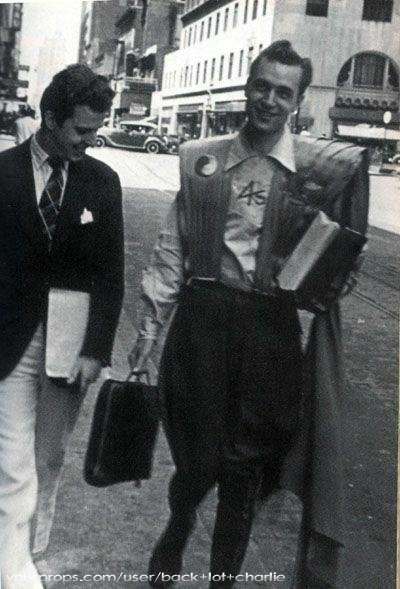

Qui a inventé le cosplay ?
Contrairement aux idées reçues, ce ne sont pas les Japonais qui ont inventé le cosplay, mais un Américain du nom de Forrest J. Ackerman
En 1939 Forrest s'est rendu à la première convention américaine (le WorldCon) en homme du futur, dans un costume crachant des étincelles.
C'est de là que le cosplay et les premiers concours sont nés.
Photo de de Forrest J. Ackerman dans son costume de l'homme futur si-dessous

Son évolution :
Ce fut dans les années 1970-1980 que le cosplay commença à devenir populaire grâce à la sortie de la série Star Trek et de la trilogie de films Star Wars.
En Tunisie, le cosplay a vu le jour en mars 2010 grâce à "First Cosplay in Tunisia", une organisation de fans de mangas qui a évolué par la suite grâce à Banzai, organisé par JET (Japanese Event in Tunisia).
En Afrique du Nord et au Maroc, le cosplay est apparu lors des premiers Manga Expo organisés par l'association Dragon Tanger, puis avec Manga Afternoon. Créé le 24 janvier 2010 à Casablanca, ce fut le premier événement majeur consacré à la culture otaku au Maroc.
Il démocratisa le cosplay dans ce pays avec plus d'une dizaine de rassemblements en deux ans.
Au Japon, le cosplay fut importé par un journaliste du nom de Takahashi dans les années 1970, après qu'il ait publié un article sur le WorldCon.